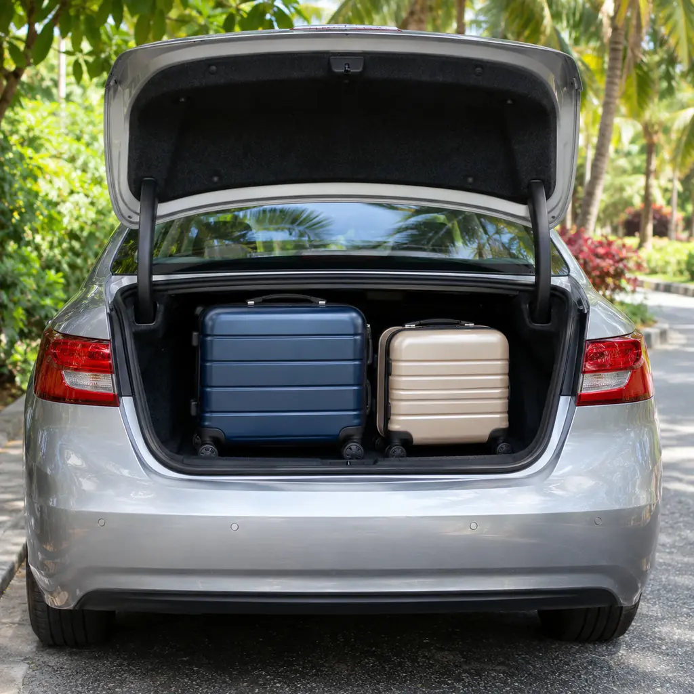
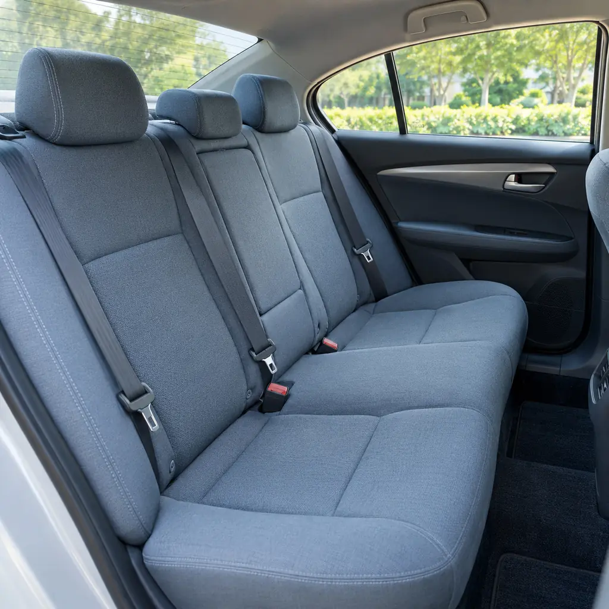

Aeropuerto IGR
Te buscamos cuando aterriza tu vuelo y te dejamos en tu hotel. A la vuelta, te llevamos al aeropuerto con tiempo.
Consultar trasladoTaxi y remis · Puerto Iguazú, Misiones
Te llevamos a las Cataratas, a Foz do Iguaçu, a Ciudad del Este, a Posadas y a toda la región.

Te buscamos cuando aterriza tu vuelo y te dejamos en tu hotel. A la vuelta, te llevamos al aeropuerto con tiempo.
Consultar trasladoViajes al Parque Nacional Iguazú y al lado brasileño. Coordinamos la hora de ida y la de vuelta.
Consultar viaje a CataratasViajes a Ciudad del Este para hacer compras, con lugar para las bolsas a la vuelta.
Consultar viaje de comprasTambién viajamos a Foz do Iguaçu, Itaipú, Posadas, San Ignacio, Wanda y Moconá.
Ver los 12 destinosTocá un destino y miralo en el mapa.
Desde el aeropuerto IGR
IGRAR
Las pasarelas y la Garganta del Diablo, del lado argentino.
Consultar este viajeUbicación aproximada en el mapa

Contanos desde dónde salís, adónde vas, qué día y a qué hora.
El precio depende del recorrido: te lo confirmamos antes de viajar.
En el aeropuerto, en tu hotel o donde estés. Si llegás en avión, pasanos el número de vuelo.
Con las valijas o las bolsas de compras en el baúl.
¿Te quedó otra duda? Escribinos y te respondemos por WhatsApp.
Sí. Coordinamos por WhatsApp con tu número de vuelo y la hora de llegada, y te esperamos para llevarte al hotel.
Sí. Viajamos a Foz do Iguaçu, a las Cataratas del lado brasileño, a Itaipú, al Templo Budista, al Marco das Três Fronteiras y a Ciudad del Este.
Cada pasajero viaja con su documento vigente (DNI o pasaporte, según su nacionalidad). En el puente se hace el control migratorio y la espera puede variar.
Depende del recorrido. Escribinos con el origen, el destino y el horario, y te pasamos el valor.
Sí. Contanos cuántas llevan cuando coordines el viaje.
Sí: Posadas, las Ruinas de San Ignacio, las Minas de Wanda y los Saltos del Moconá.
Completá los datos y se abre WhatsApp con el mensaje listo para mandar.